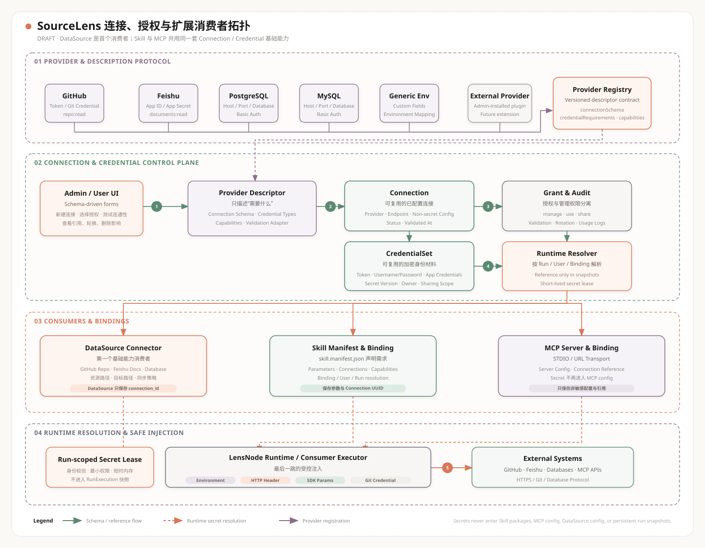

Provider 与描述协议
GitHub、飞书、数据库和 Generic Environment 通过统一 Descriptor 声明连接参数、凭据类型、Capability 和验证方式。
DRAFT · 讨论阶段系统架构图；实施前需结合安全审查收缩范围

GitHub、飞书、数据库和 Generic Environment 通过统一 Descriptor 声明连接参数、凭据类型、Capability 和验证方式。
Connection 保存 Endpoint 与非敏感配置，CredentialSet 加密保存身份材料，Grant 分离 manage、use 和 share 权限。
DataSource 是第一个消费者；Skill Manifest 和 MCP Binding 可继续复用同一套 Connection 选择、授权与审计能力。
秘密不进入 Skill 包、DataSource/MCP 配置或 RunExecution 快照；运行时通过短时租约在 LensNode 最后一跳注入。